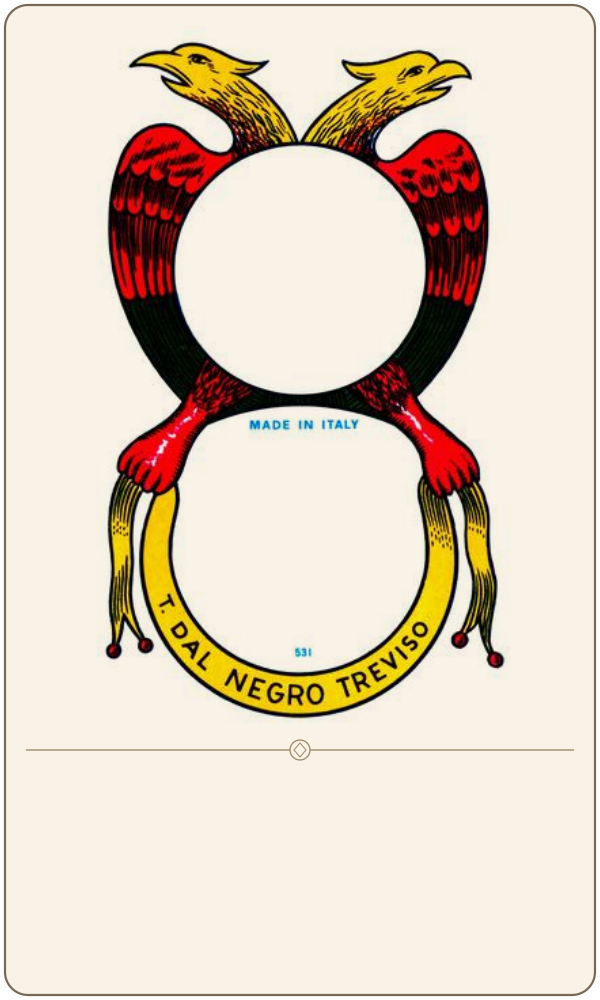
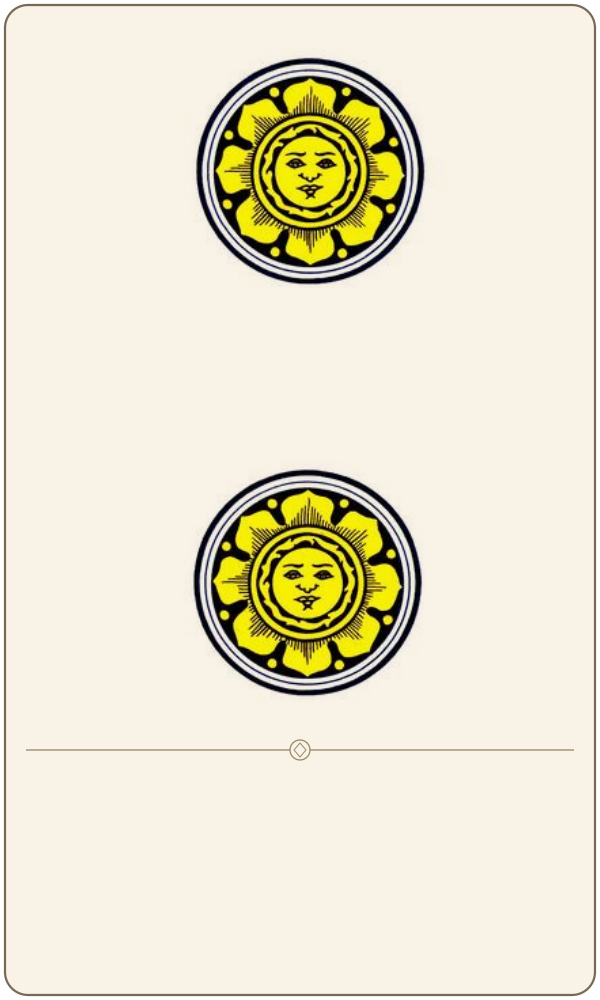
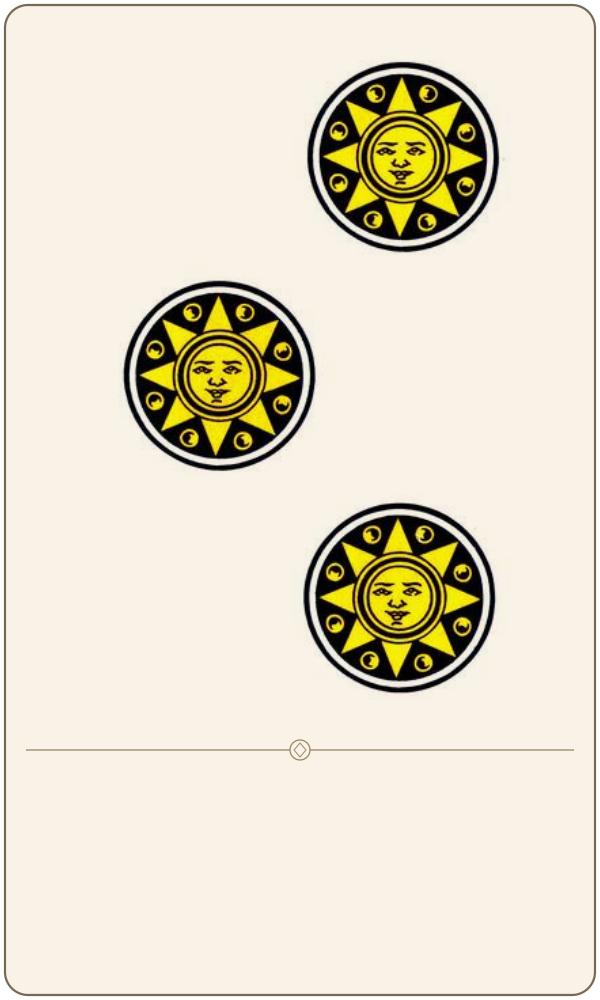
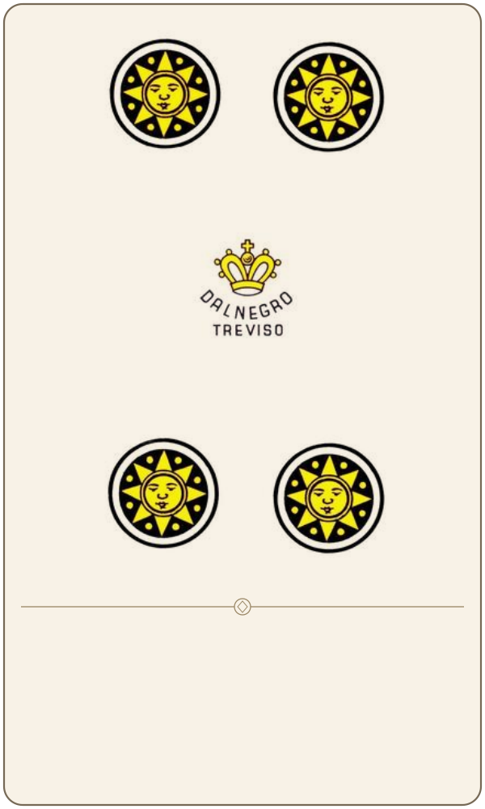
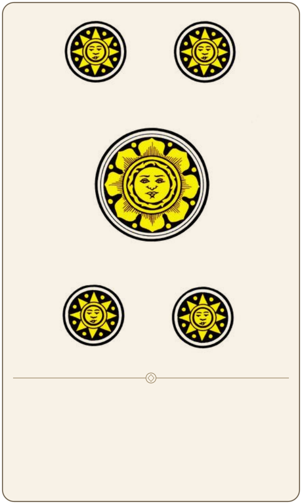
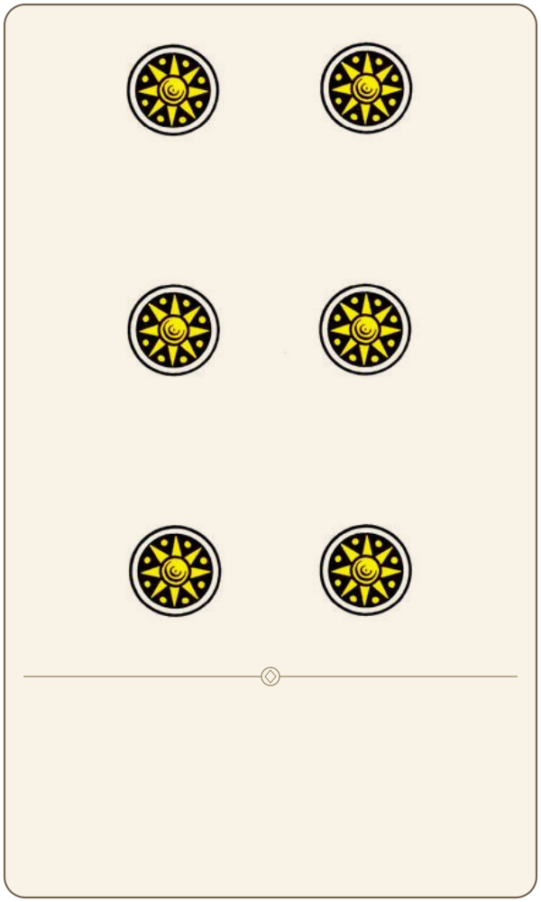
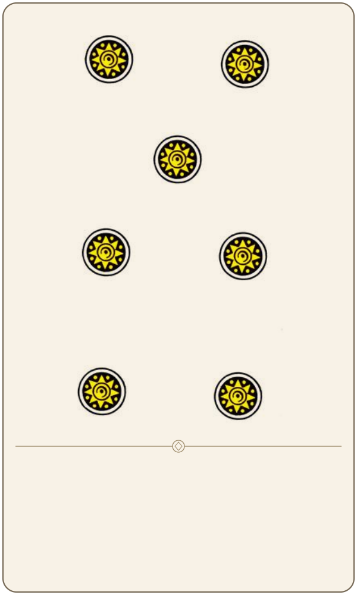
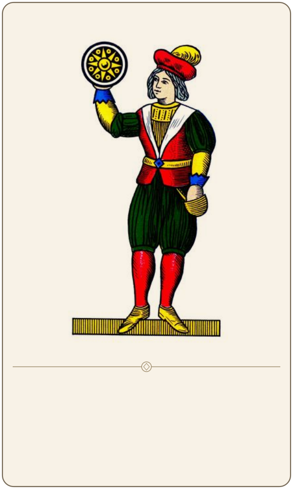
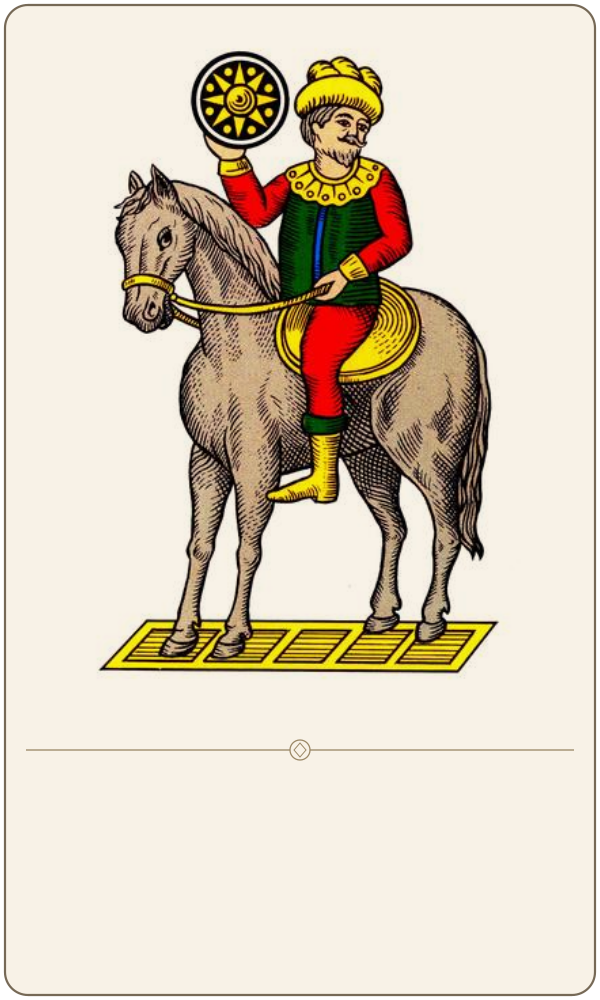
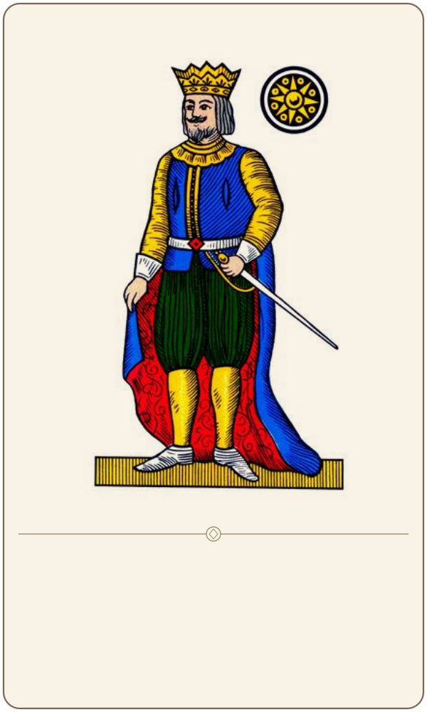

Denari — carte napoletane originali
Dieci immagini autentiche, Asso–Re. Immagini sorgenti preservate e formato da gioco con fascia effetti. Proposta grafica in attesa di approvazione.




























